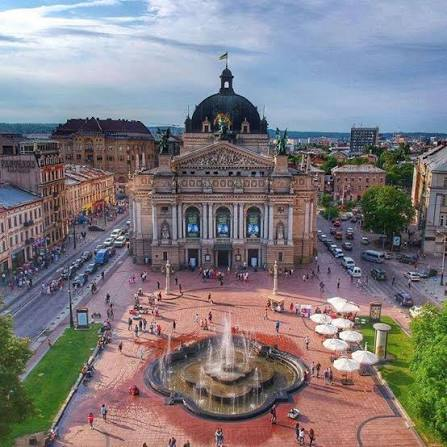
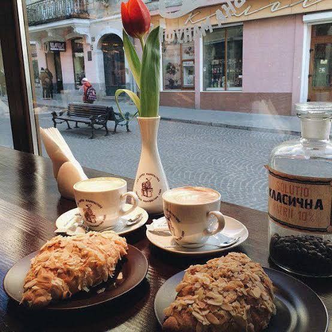

Визначні пам'ятки

Площа Ринок, Ратуша та Високий Замок — це ті місця, які обов'язково треба відвідати.
Кухня та гастрономія 🥐

Львів славиться своїми кав'ярнями, пляцками та шоколадом. Ми відвідали безліч закладів, і кожен з них унікальний.
Культура та традиції
Тут постійно проходять фестивалі, грають вуличні музиканти, а атмосфера завжди тепла і святкова.
Особисті історії
Найбільше мені запам'ятався вечір на оглядовому майданчику, коли все місто засвітилося вогнями. Це було неймовірно!